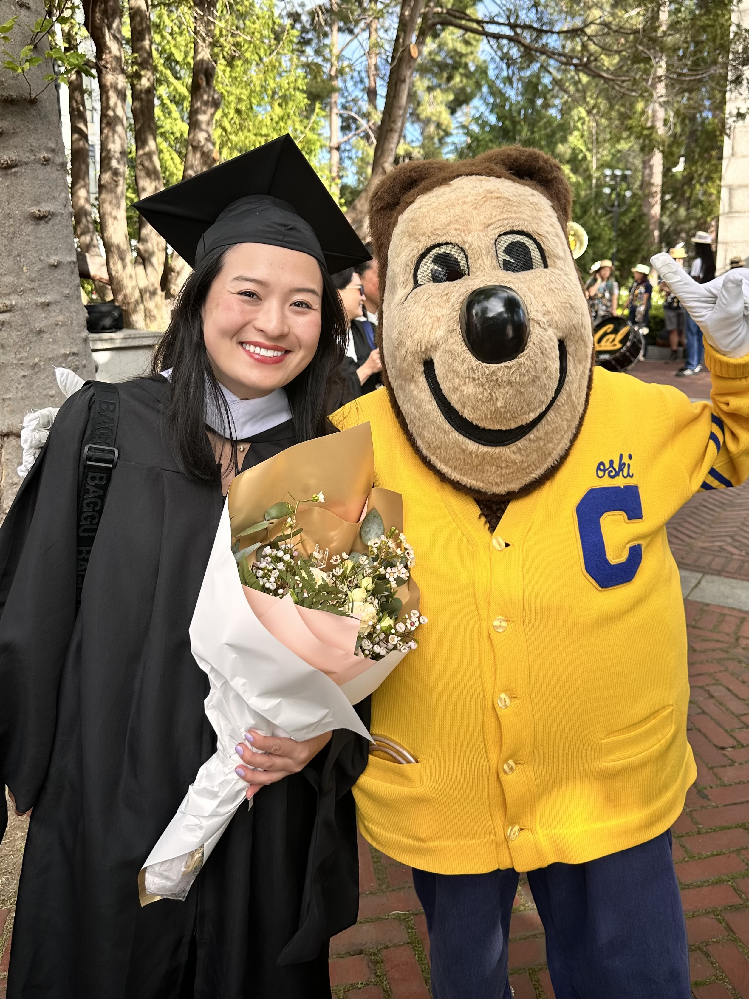
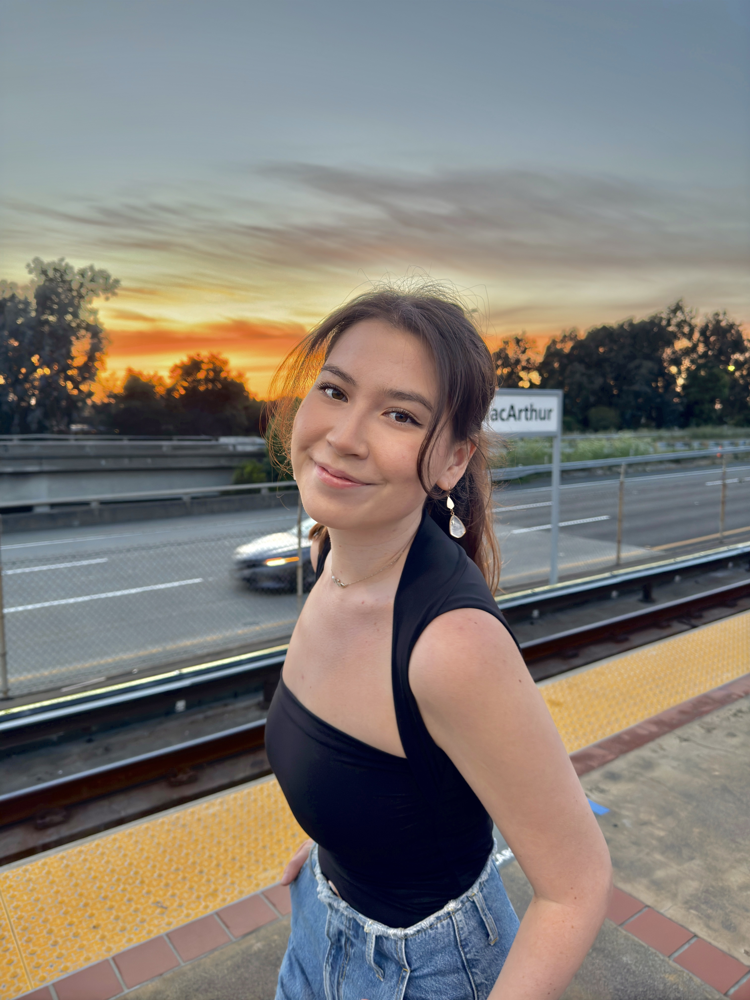
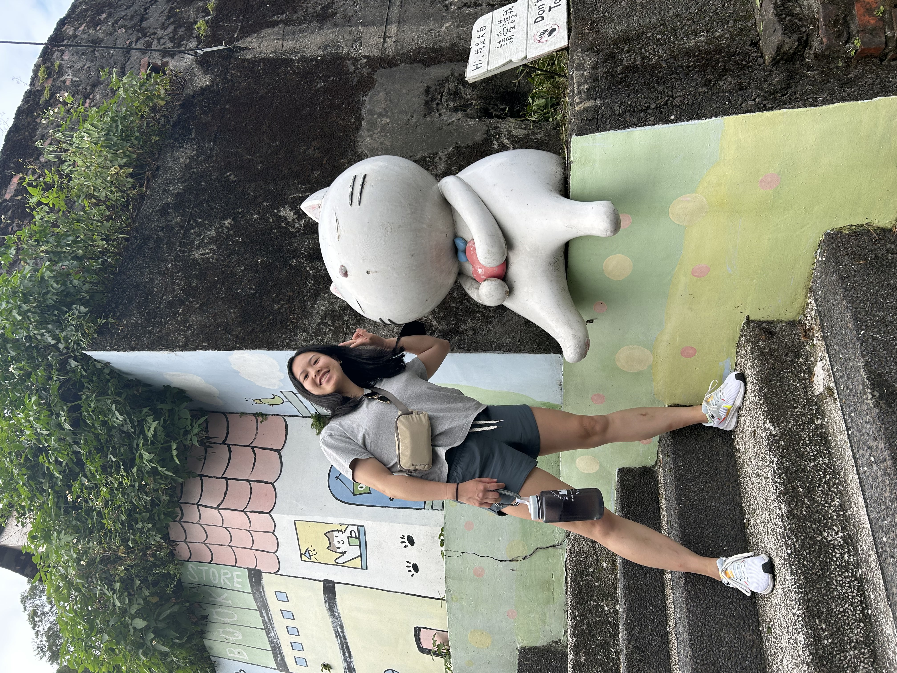

Data Science Workshop - Fall 2024
Welcome!
This is the website for the Biostatistics and Data Science Workshop, organized by Division of Biostatistics at the University of California, Berkeley.
Background
Historically underrepresented minority (URM) students often face significant obstacles in accessing equitable educational opportunities, particularly in the fields of Science, Technology, Engineering, and Mathematics (STEM). These challenges are most pronounced during the early stages of their education, notably in high school and at the start of their undergraduate studies. Early exposure to STEM disciplines, including programming and data analysis, is critical for these students as it not only provides the necessary skills and experiences for advanced research or graduate studies but also opens up new potential career paths.
With this in mind, the long-term goal of our Biostatistics Workshop is to offer URM students an opportunity for equitable exposure to programming and data analysis. By doing so, we aim to showcase how data science and biostatistics can be both engaging and valuable as potential career options. Importantly, this workshop is dedicated to addressing educational inequality, rather than simply increasing the number of URM applicants in our department.
Workshop Overview
This two-day workshop provides an immersive experience in basic data analysis using R, a popular programming language in data science. Most lecutres are largely based on the wonderful lectures prepared by Prof. Alejandro Schuler for his R for Data Science course. Participants will gain experience at data I/O, transformation, programming, and visualization in R. We will use a consistent set of packages for these tasks called the tidyverse.
In addition, the workshop provides:
Research Exposure: You will hear from faculty members and graduate students from the Biostatistics department at UC Berkeley, who will share insights into their groundbreaking research. We will also conduct in seminars on soft skill development.
Project Experience: At the end of the workshop, we will form groups and work together to create our own data visualization web app using the tools we have learned throughout the weekend. Everyone will have an opportunity to contribute to the project and present their app to the whole workshop.
Networking Opportunities: Informal networking sessions will offer the chance for participants to connect with peers, graduate students, and faculty members over food and drinks.
Instructor Team

Click through the tabs to meet our instructor team for the weekend!

Kaitlyn is a PhD student studying Biostatistics. She is also the Diversity, Equity, Inclusion, and Belonging (DEIB) Student Fellow in the Division. Kaitlyn is interested in developing methods that use machine learning and statistics to answer questions pertaining to health and social policy. Outside of school, she likes to bake for her friends and go on hikes with her dog, Lulu.

Alissa is a second year MA-PhD Biostatistics student. She is interested in causal inference and machine learning methods that influence the design and analysis of various trial designs in the clinical setting. In her free time, she likes to explore the outdoors and watch movies with friends.

Emily is a first year M.A. student in Biostatistics at UC Berkeley. She is interested in precision medicine, which uses a patient’s genetics, lifestyle, and environment to determine which medical treatments will suit them best. Outside of school, Emily enjoys rock climbing, knitting, doing escape rooms with friends, and playing the New York Times games.
Bio here
Bio here
Prerequisites
No prior experience with R or coding is needed nor expected. We will use R through the RStudio interface. The easiest way to access RStudio is through the cloud: posit.cloud. It’s fast, easy, and free - just go the link, click “get started” and create an account. Once you’re in, click “new project” near the upper-right and the RStudio interface will open.
Alternatively, you can install R and RStudio on your own computer: Follow this link and click on the appropriate options for your operating system to install R, then do the same to install RStudio.
Learning Goals
By the end of the course, you will be able to:
- comfortably use R through the Rstudio interface
- read and write tabular data between R and flat files
- subset, transform, summarize, join, and plot data
- write reusable and readable programs
- seek out, learn, and integrate new packages and code into your analyses
Schedule
Day 1: Introduction to R and RStudio
| Time | Activity |
|---|---|
| 9 - 9:30 AM | Welcome and introduction |
| 9:30 - 10:30 AM | Lecture: Introduction to data science and data analysis |
| 10:30 - 10:45 AM | Forming groups and Q&A |
| 10:45 AM - 12 PM | Campus Tour |
| 12 - 1 PM | Lunch Break |
| 1 - 3 PM | R workshop (Introduction to R and learnr) |
Day 2: Data Wrangling and Visualization
| Time | Activity |
|---|---|
| 9 - 10 AM | Faculty Panel |
| 10 - 11 AM | Graduate Student Panel |
| 11 - 11:15 AM | Break |
| 11:15 AM - 12:45 PM | R workshop (Star Wars Data Wrangling) |
| 12:45 - 1:15 PM | Lunch Break |
| 1:15 - 1:30 PM | Lecture: Data Visualization |
| 1:30 - 2:15 PM | R workshop (Penguins and Data Visualization) |
| 2:15 - 3 PM | Brainstorming and Creativity |
Schedule and Slides
| Module | Topic | Learning Goals | Packages | Reading |
|---|---|---|---|---|
| 1 | Intro and Plotting |
|
|
R4DS ch. 1, 9-11 |
| 2 | R Programming |
|
|
R4DS ch. 2, 4, 6, 8, 20 |
| 3 | Tabluar Data |
|
|
R4DS ch. 3, 12-16, 18 |
Further learning
If you are interested in a deeper dive on the topics we will be discussing, Prof. Schuler recommends the fantastic book R for Data Science (R4DS:2e) by Hadley Wickham, Mine Çetinkaya-Rundel, and Garrett Grolemund (O’Reilly Media, 2017); it is online for free and also available in hardcopy.